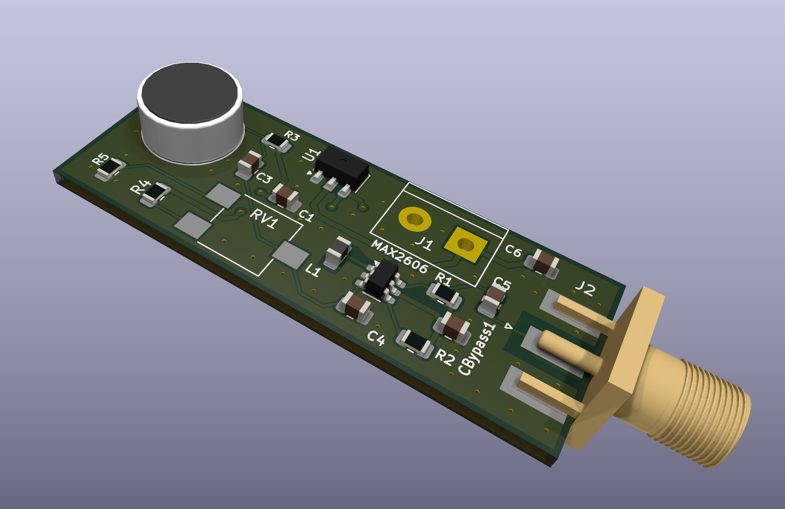
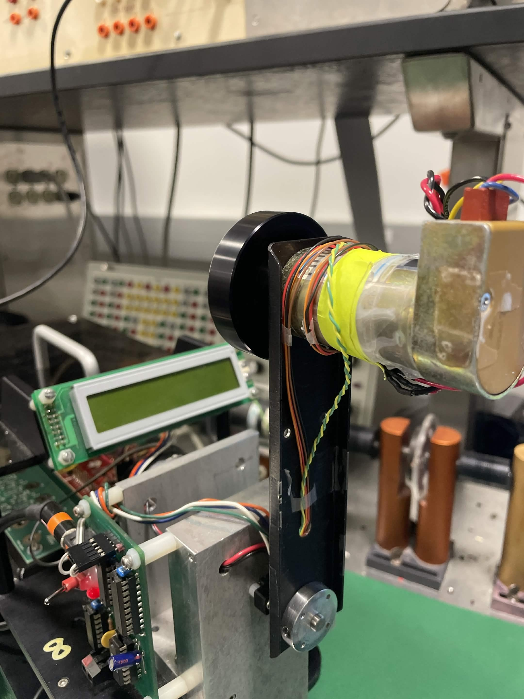
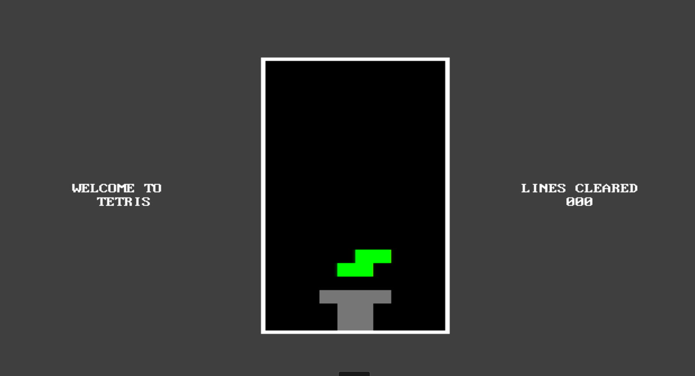

Projects
Personal and coursework projects
FM Voice Transmitter

Designed a 2-layer FM transmitter PCB around the MAX2606 voltage-controlled oscillator, incorporating an adjustable carrier-tuning network, an electret microphone for voice-based frequency modulation, and a regulated 3.3V power supply. Applied RF-conscious layout techniques, including via-stitched ground planes and localized ground-plane keepouts around sensitive circuitry. Characterized carrier tuning, RF output power, and voice-modulated spectra using a spectrum analyzer.
Synchronous Buck Converter
 Independent Power Electronics Project — Control in Progress
Independent Power Electronics Project — Control in Progress
Developed a synchronous DC-DC buck converter project using complementary MOSFET switching and PWM control. Investigated duty-cycle response, continuous and discontinuous inductor current, switching behavior, and converter losses. Closed-loop output-voltage regulation remains in development while comparing analog, digital, and embedded control approaches.
Reaction Wheel Pendulum


Designed a real-time control system for a reaction wheel pendulum to achieve swing-up stabilization of a pendulum arm using the reaction torque generated by a DC motor driven flywheel. Designed and tested an observer-based controller to estimate unmeasured velocity states and improve real-time stabilization performance. Achieved swing-up, inverted stabilization, and switching control between downward and inverted equilibria on embedded hardware (TI-C2000 + Simulink) using friction compensation, state feedback, and observer-based state estimation.
Low Dropout Regulator
 (ECE 483) Analog IC Design Project
(ECE 483) Analog IC Design Project
Designed a CMOS LDO designed in cadence 180nm technology, Delivering ~1.2V output voltage for a range of 0.1-10mA of load current. Implemented Folded-Cascode amplifier architecture with reference voltage and feedback as error amplifier. Achieved DC load regulation of 14uV/mA and DC line regulation of 60uV/V. minimal output noise, and loop-gain phase margin from 66.2 to 87 from a range of 0.1mA-10mA.
AC-DC Power supply w/ Amplification

Designed and tested a regulated multi-stage AC-DC power supply; stepped down 120VAC to 25VAC via a transformer, converting to a stable 9.5V DC output with low ripple. Implemented the conversion stage using a full-bridge rectifier, capacitor filter, Zener voltage reference, op-amp gain stage, and BJT current boost stage. Designed a custom PCB in KiCad, optimizing trace widths for high-current paths through the rectifier and boost stages to manage thermal dissipation and minimize resistive losses.
Tetris on FPGA


Designed with system-on-chip MicroBlaze softcore processor, used to handle USB input. Capable of HDMI display, the game is controlled using a standard USB keyboard, as well as having AUDIO output through AUDIO OUT of FPGA board.